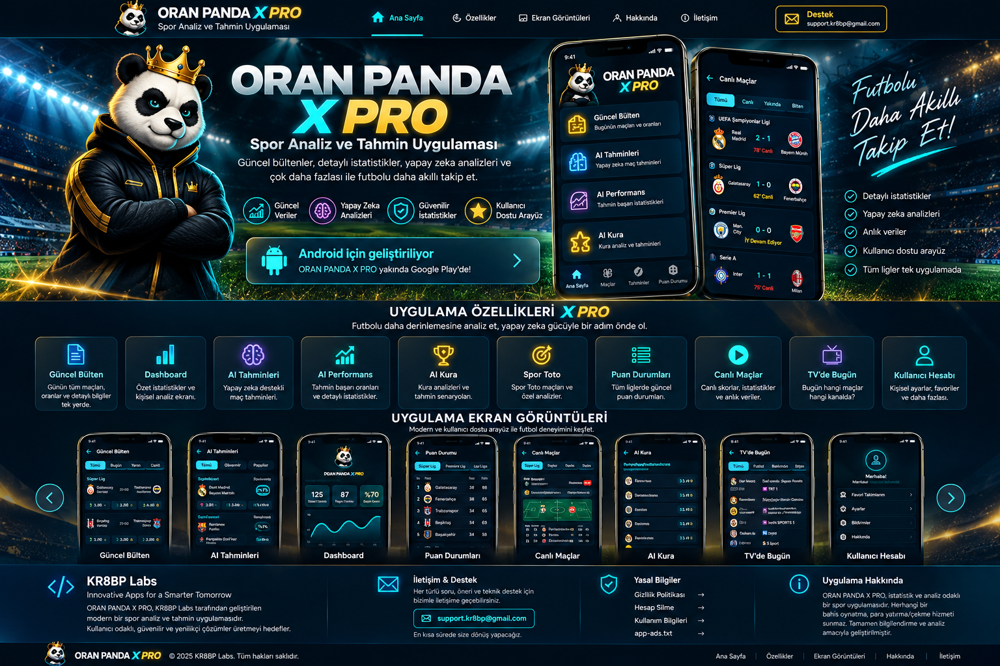

ORAN PANDA
X PRO
Yapay Zekâ Destekli Spor Analiz Uygulaması
Güncel bültenler, detaylı istatistikler, yapay zekâ destekli analiz araçları, performans takibi ve çok daha fazlasıyla futbol verilerini tek bir modern deneyimde bir araya getirir.
UYGULAMA ÖZELLİKLERİ X PRO
Futbolu daha derinlemesine analiz et, veriyi tek ekranda takip et.
Güncel Bülten
Günün maçları, oranlar ve detaylı bülten bilgileri.
Dashboard
Özet istatistikler ve kişisel analiz ekranı.
AI Tahminleri
Verilerden üretilen yapay zekâ destekli maç analizleri.
AI Performans
Tahmin performansı ve dönemsel başarı istatistikleri.
AI Kura
Kura analizleri ve filtrelenmiş maç senaryoları.
Spor Toto
Spor Toto maçları ve özel analiz araçları.
Puan Durumları
Liglerde güncel puan durumları ve istatistikler.
Canlı Maçlar
Canlı skorlar, maç bilgileri ve anlık takip.
TV'de Bugün
Bugün hangi maçın hangi kanalda olduğunu görüntüle.
Kullanıcı Hesabı
Kişisel ayarlar, favoriler ve hesap özellikleri.
ORAN PANDA X PRO'YU KEŞFET
Uygulamanın arayüzünü ve temel özelliklerini tanıtım videosunda inceleyin.
PROFESYONEL ÜRÜN DENEYİMİ
Yeni web tasarımının hedeflediği premium Oran Panda X Pro görünümü.

</> KR8BP Labs
Innovative Apps for a Smarter Tomorrow
ORAN PANDA X PRO, KR8BP Labs tarafından geliştirilen modern bir spor analiz ve bilgilendirme uygulamasıdır.
✉ İletişim & Destek
Her türlü soru, öneri ve teknik destek için bizimle iletişime geçebilirsiniz.
support.kr8bp@gmail.comⓘ Uygulama Hakkında
İstatistik ve analiz odaklı spor uygulamasıdır. Herhangi bir bahis oynatma, para yatırma veya çekme hizmeti sunmaz.